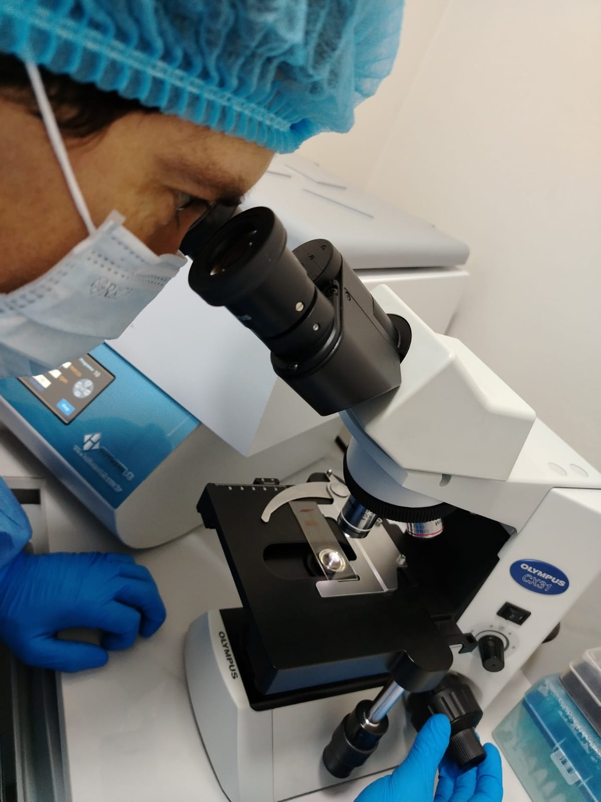
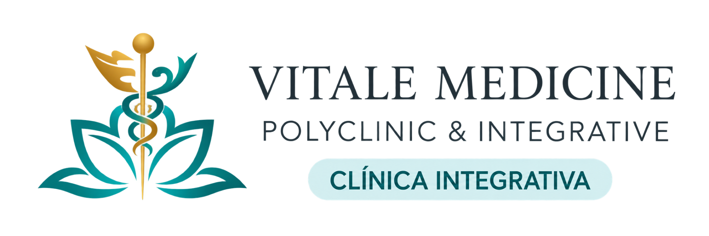
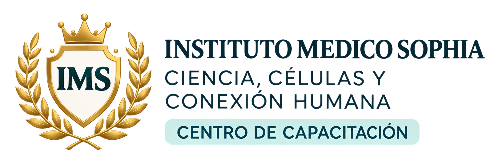

Modalidade
PresencialPrograma em destaque
Terapia Celular e Medicina Regenerativa
Formação científica para um futuro de novas possibilidades.
Um programa integral para compreender os fundamentos, aplicações, processos de pesquisa e critérios de segurança das terapias celulares e da medicina regenerativa, a partir de uma perspectiva científica e clínica.
Informações principais do programa
Localização
Ciudad del Este — ParaguaiCertificação
Certificação VIRNO programa
Formação com fundamento científico
O programa aborda a terapia celular e a medicina regenerativa a partir de uma perspectiva acadêmica que articula evidências científicas, prática clínica e pesquisa, com atenção permanente à ética e à segurança.

Evidências científicas
Compreensão crítica dos fundamentos que orientam o campo.
Aplicação clínica e pesquisa
Conexão entre conhecimento, prática clínica e desenvolvimento científico.
Ética e segurança
Critérios transversais para uma formação responsável.
Para quem é
Formação dirigida a profissionais da saúde
É dirigido a médicos e profissionais da saúde interessados em ampliar e atualizar sua formação em medicina regenerativa e terapias celulares.
Plano de estudos
Estrutura do programa
Um percurso acadêmico que integra fundamentos científicos, obtenção e processamento celular, prática clínica, pesquisa e regulação.
-
01
Fundamentos e Origem Celular
Teoria
-
02
Classificação Celular
Teoria
-
03
Terreno Biológico
Teoria
-
04
Oficina Clínica de Terreno Biológico
Prática
-
05
Técnicas de Obtenção
Teoria
-
06
Protocolos de Aspiração
Teoria
-
07
Oficina de Simulação de Aspiração
Prática
-
08
Processamento e Separação
Teoria
-
09
Mecanismos de Diferenciação
Teoria
-
10
Laboratório de Isolamento Celular
Prática
-
11
Indicações Clínicas
Teoria
-
12
Pesquisa e Regulação
Teoria
-
13
Oficina de Dosagem e Vias
Prática
-
14
Avaliação e Encerramento
Prática
Speakers e Coordenação Acadêmica
Experiência que conecta ciência e prática
Profissionais com trajetória clínica, acadêmica e científica vinculada às áreas abordadas no programa.
Speaker e Coordenadora dos cursos de Terapia Celular
Dra. Carolina Fernández
Instituto Médico Sophia
Fundadora e Diretora Médica
Ciudad del Este, Alto Paraná, Paraguai
Médica especializada em imunologia, medicina integrativa e terapias celulares. Sua abordagem combina a medicina convencional com ferramentas científicas de vanguarda, com uma visão centrada no atendimento personalizado e na qualidade de vida.
Após superar um diagnóstico de câncer gastrointestinal em 2009, aprofundou sua visão médica em direção a uma abordagem mais humana, integradora e vinculada à medicina regenerativa.
Trajetória de destaque
- Fundadora e Diretora Médica do Instituto Médico Sophia
- Formação de pós-doutorado em Terapia Celular
- Experiência em medicina integrativa, imunologia, nutrição e terapias celulares
- Revisora na área de Cell Therapies com ou sem manipulação genética ex-vivo na ASGCT
- Participação em pesquisa científica e tutorias na área de imunologia
Áreas de atuação
- Oncologia integrativa
- Doenças autoimunes
- Patologias neurodegenerativas
- Terapia celular e regenerativa
Coordenadora dos cursos de Terapia Celular na VIRN, onde participa de programas de formação científica voltados a profissionais da saúde.
Palestrante e Coordenador Acadêmico Adjunto
Dr. Adrialdo de Almeida Conrado
Vitale Medicine | VIRN
Diretor Técnico Clínico
Ciudad del Este, Alto Paraná, Paraguai
Médico com atuação em medicina ortomolecular, endócrina, metabólica, funcional e regenerativa. Diretor Técnico Clínico da Vitale Medicine Policlínica, com experiência em direção técnica, gestão clínica e atendimento médico integrado.
Formação
- Medicina — Universidad Autónoma San Sebastián, 2020
- Pós-graduação em Endocrinologia e Metabologia — UNINGÁ, 2025
- Pós-graduação em Ultrassonografia — UNIGRAN, 2021
Trajetória de destaque
- Membro da Sociedade Paraguaia de Medicina e Nutrição Ortomolecular
- Membro da Câmara Técnica de Injetáveis
- Autor do capítulo “Andropausa: privação androgênica com o envelhecimento masculino” (2023)
Áreas de atuação
- Endocrinologia e metabolismo
- Medicina ortomolecular e funcional
- Medicina regenerativa
- Modulação hormonal
- Saúde metabólica
Vitale International Research Network
Ciência que conecta. Inovação que transforma.
A VIRN é uma rede internacional dedicada à pesquisa, à educação e à colaboração científica em medicina regenerativa, terapias celulares e longevidade.
Conecta conhecimento, profissionais e instituições para promover a inovação clínica e contribuir para uma saúde mais humana.
- Pesquisa científica
- Formação e capacitação
- Rede internacional
- Inovação clínica
Iniciativa vinculada a


Certificação
Certificação VIRN
O programa contempla modalidade presencial e certificação VIRN.
- Modalidade
- Presencial
- Localização
- Ciudad del Este — Paraguai
- Certificação
- VIRN
Inscrição
Dê o próximo passo em sua formação
Preencha o formulário de inscrição para que nossa equipe possa conhecer seu perfil e entrar em contato com você.
Completar inscrição
Tem dúvidas sobre o programa?
Falar com nossa equipePerguntas frequentes
Informações antes de se inscrever
Qual é a modalidade do programa?
O programa é presencial. Os detalhes operacionais estão pendentes de confirmação.
Quem pode se inscrever?
É dirigido a médicos e profissionais da saúde interessados em ampliar e atualizar sua formação em medicina regenerativa e terapias celulares. A participação em determinadas atividades práticas está sujeita à habilitação profissional e aos critérios acadêmicos e regulatórios correspondentes.
Como funciona a inscrição?
A inscrição é realizada pelo formulário vinculado nesta página. Após o preenchimento, a equipe poderá conhecer seu perfil e entrar em contato com você.
Como é realizado o pagamento?
Informações sobre o processo de pagamento pendentes de confirmação.
Qual certificação receberei?
O programa contempla certificação VIRN. Os detalhes adicionais de emissão estão pendentes de confirmação.
Como posso falar com a equipe?
Você pode escrever para a equipe pelos links de WhatsApp disponíveis nesta página.
Formação científica. Conexão internacional. Impacto real na medicina.
Faça parte de uma proposta que conecta ciência, prática e inovação.